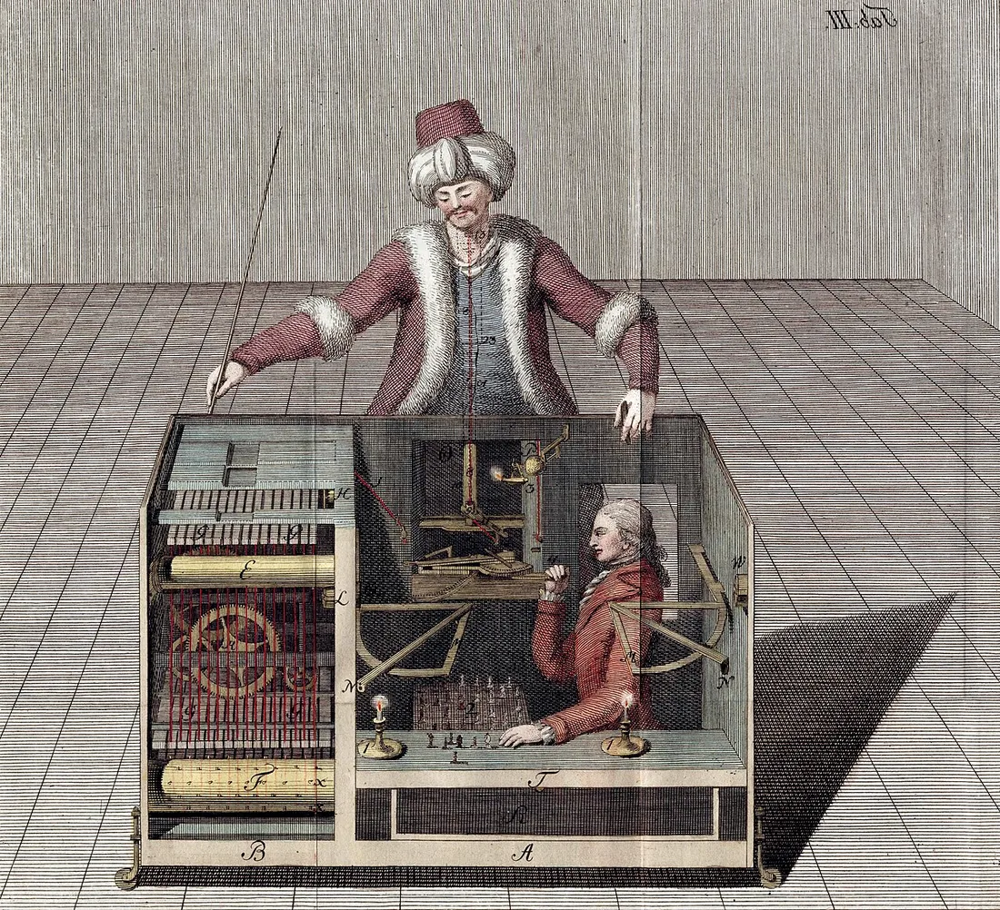

Sessão 05 / Criar com máquinas: autoria e verificação
Quem está dentro da caixa?
Quando a máquina faz, quem responde?
Começar
Recupera
De memória, sem abrir o caderno.
De memória
Saber como uma coisa funciona é saber como é vivê-la?
Confirmar
Não. Falta o ponto de vista de quem a vive.
Se só compreendemos o outro em parte, deixamos de investigar?
Confirmar
Não. É um limite do que podemos afirmar, não uma razão para desistir.
Que pergunta vais fazer ao público?
Vê
Observa primeiro. Lê depois.
Material 1 de 3: O Turco
Procura quem está dentro da caixa. Quem fez esta gravura queria mostrar ou esconder?

O Turco, apresentado em 1770 como uma máquina que vencia ao xadrez, escondia uma pessoa dentro do armário. No espetáculo, abria-se o armário para mostrar as engrenagens e provar que não havia ninguém. Em 1789, Joseph Racknitz publicou um livro a tentar explicar o truque: nesta gravura, desenhou em corte o homem escondido.
Material 2 de 3: Duas fotografias de Lisboa, 1907
Observa A e B. Uma delas foi alterada por nós. Decide qual, e guarda o pormenor que te convenceu.
Material 3 de 3: Ada Lovelace, 1843
Se a máquina faz o que lhe mandam, quem fica responsável?
A máquina «não tem a pretensão de originar nada»: faz o que sabemos mandar-lhe fazer.
Decide
Primeiro em silêncio, cada pessoa. Depois em grupo.
Sem ecrã
Primeiro, em silêncio
Um grupo quer usar uma voz gerada a imitar um cantor conhecido. Usar sem dizer, usar dizendo, ou gerar uma voz que não imita ninguém e dizer? Guarda uma razão.
Três minutos. Escreve a tua resposta e uma razão no cartão de decisão. Depois, uma volta: cada pessoa lê o seu cartão, sem comentários.
Depois, em grupo
- No cartaz da mostra há uma fotografia alterada e um texto gerado. Quem é autor, quem é instrumento, quem é responsável?
- Ordenem os quatro movimentos da verificação: fonte, data, pesquisa inversa, pormenor. Qual vos deu a certeza sobre A e B?
- O que aceita o grupo gerar, e o que exige que seja feito à mão?
No fim, registem a decisão e uma razão que ficou vencida.
Comparar razões
Usar a ferramenta não é o problema; o problema é esconder que a usaste e assinar o que não criaste. A transparência resolve uma parte; o direito de quem é imitado é a outra. Uma imagem verifica-se pela fonte, pela data, pela pesquisa inversa e pelo pormenor que não bate certo; a pergunta é quem publicou, e porquê. Nas fotografias de Lisboa, a versão B foi alterada por nós: a estátua saiu do pedestal. A fonte confirma-o: na Library of Congress, a fotografia original chama-se «Statue of the Duke of Terceira, Lisbon, Portugal».
Faz
Em papel ou no ficheiro do grupo.
Em papel
- Façam a lista de créditos e rótulos de cada elemento possível da peça (imagem, texto, som): autor, fonte, licença e, quando for o caso, «gerado». Só domínio público, CC0, CC BY ou CC BY-SA.
- Decidam como o público vai reconhecer o que é documento, criação ou simulação.
- Escrevam a frase do programa de sala que diz o que é gerado.
- Decidam se a peça usa ecrã. Escolham primeiro a regra; só depois os meios.
Rever com outra pessoa
A outra pessoa lê a nota como público, diz se percebe o que é de quem e confere uma licença.
Quem revê marca uma coisa que se percebe e uma que falta, e faz uma pergunta.
GuardarCasa 5 do mapa do Contra-feed: Os meios e os créditos
Os meios da peça: créditos e rótulos; documento, criação ou simulação; com ou sem ecrã.
- 1A regra (casa anterior)
- 2O sinal e o custo (casa anterior)
- 3As regras da casa (casa anterior)
- 4A pergunta e o público (casa anterior)
- 5Os meios e os créditos (casa de hoje)
- 6O caso (casa seguinte)
- 7Conceito e guião v1 (casa seguinte)
- 8Ensaio e guião v2 (casa seguinte)
- 9Defesa e manifesto (casa seguinte)
- 10O que o público viu (casa seguinte)
Contorno cheio: casas anteriores. Preenchida: a casa de hoje. Tracejado: casas seguintes.
Leva
Em papel, antes de sair.
Em papel
Em papel, antes de sair
Numa frase: o que precisas de saber sobre uma imagem antes de a partilhares?
Confirma
- Referes a fonte ou a data.
- Perguntas quem publicou e porquê.
- Não confundes a ferramenta com a responsabilidade.
Depois, no telemóvel
Dois ou três dias depois da sessão.
O registo fica neste aparelho.